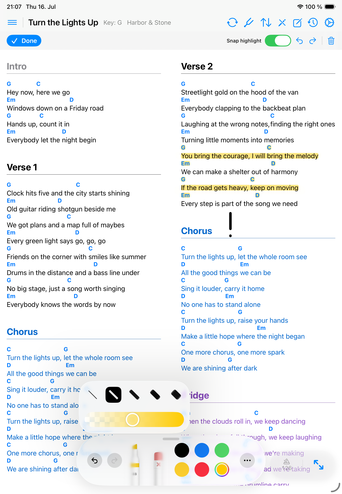
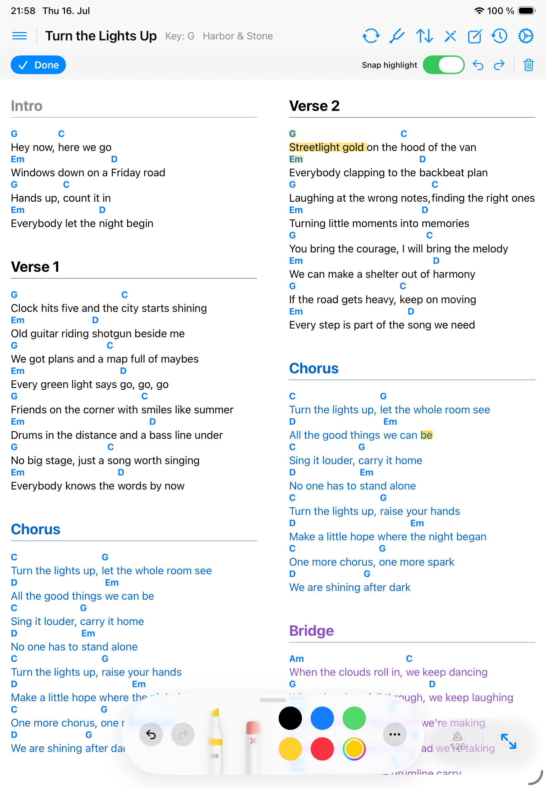

Markups
Annotations
Annotations let you mark charts on top of the song content.
Use annotations for rehearsal marks, reminders, highlights, and personal performance cues.

Draw on a song
- Open a ChordPro or PDF song.
- Turn on annotation mode.
- Use Apple Pencil or touch to draw, highlight, or erase.
- Use undo and redo while reviewing marks.
- Long-press a Pencil tool to change the annotation’s width and opacity.
- Tap Done before using performance gestures again.
Use Snap highlight
Snap highlight is available for ChordPro songs. When it is on, Songivo reads the highlighter stroke as a text selection and stores the highlight against matching chord or lyric fragments. That keeps highlights aligned when font size, columns, zoom, or device orientation changes.
- Turn on annotation mode.
- Keep Snap highlight enabled in the annotation toolbar.
- Use the highlighter across the lyric or chord text you want to mark.
- Use the eraser to remove individual marks. Clear All Drawings removes every annotation for the song.

How annotations are saved
- PDF annotations are saved with the PDF song context.
- ChordPro annotations scale as content size changes.
- Band-song annotations stay private per user even when the shared song itself is common.
- Clear annotations only when you intend to remove saved marks for the active song context.